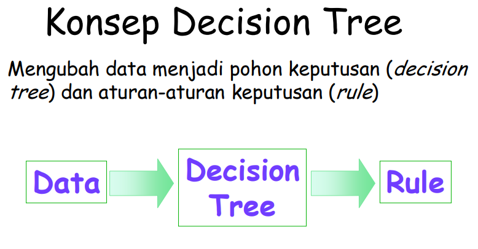
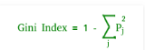
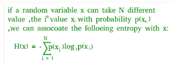
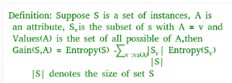

Implementasi Decision Tree Algorithm dengan scikit learn - python

Konsep dari pohon keputusan adalah mengubah data menjadi decision treedan aturan-aturan keputusan. Manfaat utama dari penggunaan decision tree adalah kemampuannya untuk mem-break down proses pengambilan keputusan yang kompleks menjadi lebih simple, sehingga pengambil keputusan akan lebih menginterpretasikan solusi dari permasalahan.
Penggunaan Decision tree ini umunya dalam riset operasi, khususnya dalam analisis keputusan. Tujuan dalam menggunakan Decision tree untuk membantu mengidentifikasi strategi yang paling mungkin untuk mencapai tujuan dan merupakan alat yang populer dalam machine learning.
Decision tree merupakan struktur seperti bagan alur dimana setiap simpul internal mewakili kemungkinan yang ada pada atribut, setiap cabang mewakili hasil dari kemungkinan tersebut, dan setiap simpul daun mewakili label kelas (keputusan diambil setelah menghitung semua atribut). Jalur dari root ke daun mewakili aturan klasifikasi.
Dalam analisis keputusan, decision tree dan diagram yang terkait dengan itu digunakan sebagai alat pendukung keputusan visual dan analitis, dimana akan dihitungnya nilai atau utilitas yang diharapkan dari alternatif yang ada.
PROS and CONS
PROS
Dalam beberapa aplikasi, akurasi dari sebuah klasifikasi atau prediksi adalah satu-satunya hal yang ditonjolkan dalam metode ini, misalnya sebuah perusahaan direct mail membuat sebuah model yang akurat untuk memprediksi anggota mana yang berpotensi untuk merespon permintaan, tanpa memperhatikan bagaimana atau mengapa model tersebut bekerja.
Kelebihan lain dari metode ini adalah mampu mengeliminasi perhitungan atau data-data yang kiranya tidak diperlukan. Sebab, sampel yang ada biasanya hanya diuji berdasarkan kriteria atau kelas tertentu saja.
CONS
Decision tree ini bisa terjadi overlap, terutama ketika kelas dan kriteria yang digunakan sangat banyak tentu saja dapat meningkatkan waktu pengambilan keputusan sesuai dengan jumlah memori yang dibutuhkan.
Dalam hal akumulasi, decision tree juga seringkali mengalami kendala eror terutama dalam jumlah besar. Selain itu, terdapat pula kesulitan dalam mendesain decision tree yang optimal. Apalagi mengingat kualitas keputusan yang didapatkan dari metode decision tree sangat tergantung pada bagaimana pohon tersebut didesain.
Bagaimana cara kerja algoritma Pohon Keputusan?
Ide dasar di balik algoritma pohon keputusan adalah sebagai berikut:
- Pilih atribut terbaik menggunakan Pengukuran Pemilihan Atribut ( Attribute selection measure )untuk membagi record .
- Jadikan atribut itu sebagai simpul keputusan dan pisahkan dataset menjadi himpunan bagian yang lebih kecil.
- Mulailah membangun pohon dengan mengulangi proses ini secara rekursif untuk setiap anak sampai salah satu dari kondisi tersebut akan cocok:
- Semua tupel memiliki nilai atribut yang sama.
- Tidak ada lagi atribut yang tersisa.
- Tidak ada contoh lagi.
Saat menerapkan Decision Tree, dengan dua fase berikut:
-
Fase Bangunan
-
Memproses ulang dataset.
-
Pisahkan dataset dari kereta dan uji menggunakan paket sklearn Python.
-
Latih pengklasifikasi
-
Fase Operasional
-
Membuat prediksi.
-
Hitung keakuratannya.
Implementasi
Data slicing :
-
Sebelum melatih model, kita harus membagi dataset menjadi dataset pelatihan dan pengujian.
-
Untuk membagi dataset untuk pelatihan dan pengujian, kami menggunakan modul sklearn train_test_split
-
Pertama-tama kita harus memisahkan variabel target dari atribut dalam dataset.
python
X = balance_data.values[:, 1:5]
Y = balance_data.values[:,0
-
Di atas adalah baris-baris dari kode yang memisahkan set data. Variabel X berisi atribut sedangkan variabel Y berisi variabel target dari dataset.
-
Langkah selanjutnya adalah membagi dataset untuk tujuan pelatihan dan pengujian.
python
X_train, X_test, y_train, y_test = train_test_split(
X, Y, test_size = 0.3, random_state = 100)
- Di atas garis, pisahkan dataset untuk pelatihan dan pengujian. Karena kami membagi dataset dalam rasio 70:30 antara pelatihan dan pengujian, maka kami memberikan nilai parameter test_size menjadi 0,3.
- variabel random_state adalah keadaan generator angka pseudo-acak yang digunakan untuk pengambilan sampel acak.
Istilah yang digunakan dalam kode:
GINI INDEX
Index Gini dan perolehan informasi kedua metode ini digunakan untuk memilih dari n atribut dataset yang atributnya akan ditempatkan pada simpul akar atau simpul internal. Indeks gini

- Indeks Gini adalah metrik untuk mengukur seberapa sering elemen yang dipilih secara acak akan diidentifikasi secara salah.
- Ini berarti atribut dengan indeks gini yang lebih rendah harus lebih disukai.
- Sklearn mendukung kriteria "gini" untuk Indeks Gini dan secara default, dibutuhkan nilai "gini"
ENTROPY

- Entropi biasanya berubah ketika kita menggunakan node dalam pohon keputusan untuk mempartisi instance pelatihan menjadi himpunan bagian yang lebih kecil. Keuntungan informasi adalah ukuran dari perubahan dalam entropi ini.
- Sklearn mendukung kriteria "entropi" untuk Penguatan Informasi dan jika kita ingin menggunakan metode Penguatan Informasi di sklearn maka kita harus menyebutkannya secara eksplisit.
INFORMATION GAIN 
- The entropy typically changes when we use a node in a decision tree to partition the training instances into smaller subsets. Information gain is a measure of this change in entropy.
- Sklearn supports “entropy” criteria for Information Gain and if we want to use Information Gain method in sklearn then we have to mention it explicitly.
ACCURACY SCORE
Accuracy score digunakan untuk menghitung akurasi classifier yang terlatih.
CONFUSION MATRIX
digunakan untuk memahami perilaku pengklasifikasi terlatih atas dataset pengujian atau memvalidasi dataset.
- Download data :
Di bawah ini adalah kode python untuk Decion Tree.
# Run this program on your local python
# interpreter, provided you have installed
# the required libraries.
# Importing the required packages
import numpy as np
import pandas as pd
from sklearn.metrics import confusion_matrix
from sklearn.tree import DecisionTreeClassifier
from sklearn.model_selection import train_test_split
from sklearn.metrics import accuracy_score
from sklearn.metrics import classification_report
# Function importing Dataset
def importdata():
balance_data = pd.read_csv("bill_authentication-edit.csv",sep= ',', header = 1)
# Printing the dataswet shape
print ("Dataset Lenght: ", len(balance_data))
print ("Dataset Shape: ", balance_data.shape)
# Printing the dataset obseravtions
print('dataset :')
print (balance_data.head())
return balance_data
# Function to split the dataset
def splitdataset(balance_data):
# Seperating the target variable
X = balance_data.values[:, 1:5]
Y = balance_data.values[:, 0]
# Spliting the dataset qinto train and test
X_train, X_test, y_train, y_test = train_test_split(
X, Y, test_size = 0.3, random_state = 100)
return X, Y, X_train, X_test, y_train, y_test
# Function to perform training with giniIndex.
def train_using_gini(X_train, X_test, y_train):
# Creating the classifier object
clf_gini = DecisionTreeClassifier(criterion = "gini",
random_state = 100,max_depth=3, min_samples_leaf=5)
# Performing training
clf_gini.fit(X_train, y_train)
return clf_gini
# Function to perform training with entropy.
def tarin_using_entropy(X_train, X_test, y_train):
# Decision tree with entropy
clf_entropy = DecisionTreeClassifier(
criterion = "entropy", random_state = 100,
max_depth = 3, min_samples_leaf = 5)
# Performing training
clf_entropy.fit(X_train, y_train)
return clf_entropy
# Function to make predictions
def prediction(X_test, clf_object):
# Predicton on test with giniIndex
y_pred = clf_object.predict(X_test)
print("Predicted values:")
print(y_pred)
return y_pred
# Function to calculate accuracy
def cal_accuracy(y_test, y_pred):
print("Confusion Matrix: ",
confusion_matrix(y_test, y_pred))
print ("Accuracy : ",
accuracy_score(y_test,y_pred)*100)
print("Report : ",
classification_report(y_test, y_pred))
# Driver code
def main():
# Building Phase
data = importdata()
X, Y, X_train, X_test, y_train, y_test = splitdataset(data)
clf_gini = train_using_gini(X_train, X_test, y_train)
clf_entropy = tarin_using_entropy(X_train, X_test, y_train)
# Operational Phase
print("Results Using Gini Index:")
# Prediction using gini
y_pred_gini = prediction(X_test, clf_gini)
cal_accuracy(y_test, y_pred_gini)
print("Results Using Entropy:")
# Prediction using entropy
y_pred_entropy = prediction(X_test, clf_entropy)
cal_accuracy(y_test, y_pred_entropy)
# Calling main function
if __name__=="__main__":
main()
HASIL :
**Data Infomation:**
Dataset Lenght: 1371
Dataset Shape: (1371, 5)
dataset :
0 8.6661 -2.8073 -0.44699 3.6216
0 0 8.1674 -2.4586 -1.46210 4.54590
1 0 -2.6383 1.9242 0.10645 3.86600
2 0 9.5228 -4.0112 -3.59440 3.45660
3 0 -4.4552 4.5718 -0.98880 0.32924
4 0 9.6718 -3.9606 -3.16250 4.36840
###########################**Results Using Gini Index:**#######################
Predicted values:
[1. 0. 1. 0. 0. 0. 1. 0. 1. 0. 0. 1. 1. 0. 0. 0. 0. 0. 0. 0. 1. 1. 0. 1.
1. 1. 0. 1. 1. 0. 1. 0. 1. 0. 0. 1. 0. 1. 1. 1. 0. 0. 0. 0. 0. 1. 1. 0.
2. 1. 0. 1. 0. 1. 1. 1. 0. 0. 0. 0. 1. 0. 0. 1. 1. 1. 0. 1. 1. 0. 0. 0.
3. 0. 0. 0. 1. 1. 0. 0. 0. 1. 1. 1. 0. 0. 0. 0. 0. 0. 1. 0. 0. 1. 0. 0.
4. 0. 0. 0. 0. 1. 0. 0. 0. 1. 0. 0. 0. 1. 1. 1. 1. 0. 0. 0. 0. 1. 0. 0.
5. 0. 1. 1. 0. 0. 1. 1. 0. 0. 0. 1. 0. 0. 1. 0. 0. 0. 1. 1. 0. 0. 0. 0.
6. 0. 1. 0. 0. 1. 1. 0. 1. 0. 1. 1. 0. 0. 0. 0. 1. 1. 0. 1. 1. 1. 0. 0.
7. 1. 0. 0. 1. 0. 1. 0. 0. 0. 1. 0. 0. 0. 0. 1. 0. 1. 0. 0. 1. 1. 0. 0.
8. 1. 1. 1. 1. 0. 0. 0. 1. 1. 0. 1. 0. 1. 1. 0. 0. 0. 1. 0. 0. 0. 1. 0.
9. 1. 1. 1. 1. 0. 0. 1. 0. 1. 0. 1. 1. 1. 0. 0. 0. 0. 0. 0. 0. 0. 0. 1.
10. 0. 1. 1. 0. 1. 1. 1. 1. 1. 1. 0. 0. 0. 0. 0. 0. 0. 0. 0. 0. 1. 1. 0.
11. 1. 0. 0. 0. 0. 0. 0. 0. 0. 1. 1. 1. 1. 0. 1. 1. 0. 0. 1. 1. 0. 1. 0.
12. 0. 1. 1. 1. 0. 0. 1. 0. 1. 0. 1. 1. 0. 1. 1. 0. 1. 0. 0. 0. 1. 1. 1.
13. 1. 1. 1. 1. 0. 0. 0. 1. 0. 0. 0. 0. 0. 1. 0. 0. 0. 1. 0. 0. 1. 1. 0.
14. 0. 1. 1. 1. 0. 1. 0. 1. 0. 0. 0. 0. 0. 1. 0. 1. 0. 1. 0. 0. 0. 0. 0.
15. 0. 1. 1. 0. 1. 1. 1. 0. 1. 0. 0. 1. 1. 0. 0. 1. 1. 1. 0. 0. 0. 0. 0.
16. 1. 0. 0. 1. 0. 0. 1. 1. 1. 0. 1. 0. 1. 1. 0. 1. 0. 0. 1. 0. 0. 0. 1.
17. 1. 0. 0.]
Confusion Matrix:
[[227 11]
[ 14 160]]
Accuracy : 93.93203883495146
```python
Report : precision recall f1-score support
0.0 0.94 0.95 0.95 238
1.0 0.94 0.92 0.93 174
```
micro avg 0.94 0.94 0.94 412
macro avg 0.94 0.94 0.94 412
weighted avg 0.94 0.94 0.94 412
############################# **Results Using Entropy:**#############################
Predicted values:
[1. 0. 1. 1. 0. 0. 1. 1. 1. 1. 0. 1. 1. 0. 0. 0. 0. 0. 0. 0. 1. 1. 0. 1.
1. 1. 1. 1. 1. 0. 1. 0. 1. 0. 1. 1. 0. 1. 1. 1. 0. 1. 0. 0. 0. 0. 1. 0.
2. 1. 0. 1. 0. 1. 1. 1. 0. 1. 0. 0. 1. 0. 0. 1. 1. 1. 0. 1. 1. 0. 0. 0.
3. 0. 0. 0. 1. 1. 0. 0. 1. 1. 1. 1. 0. 0. 0. 1. 0. 0. 1. 0. 0. 1. 0. 0.
4. 0. 0. 0. 0. 1. 0. 1. 0. 1. 0. 0. 0. 1. 1. 1. 1. 0. 0. 0. 0. 1. 0. 0.
5. 0. 1. 0. 0. 0. 1. 1. 1. 0. 0. 1. 0. 0. 1. 0. 1. 0. 1. 1. 0. 0. 0. 0.
6. 0. 1. 0. 1. 1. 1. 0. 1. 0. 1. 1. 0. 1. 0. 0. 1. 1. 1. 1. 1. 1. 0. 1.
7. 1. 0. 0. 1. 0. 1. 0. 0. 0. 1. 0. 0. 0. 1. 1. 1. 1. 0. 0. 1. 1. 1. 0.
8. 1. 1. 1. 1. 0. 0. 1. 1. 1. 0. 1. 0. 1. 1. 0. 1. 0. 1. 0. 0. 0. 1. 0.
9. 1. 1. 1. 1. 0. 1. 1. 1. 1. 0. 1. 1. 1. 0. 1. 0. 1. 0. 1. 0. 1. 0. 1.
10. 0. 1. 1. 0. 1. 1. 1. 1. 1. 1. 0. 0. 0. 0. 0. 0. 1. 0. 0. 0. 1. 1. 0.
11. 1. 0. 0. 0. 0. 0. 1. 0. 0. 1. 1. 1. 1. 0. 1. 1. 0. 0. 1. 1. 0. 1. 1.
12. 1. 1. 1. 1. 1. 0. 1. 0. 1. 0. 1. 1. 0. 1. 1. 0. 1. 0. 0. 0. 1. 1. 1.
13. 1. 1. 1. 1. 0. 0. 1. 1. 1. 0. 0. 0. 0. 1. 0. 1. 0. 1. 0. 0. 1. 1. 0.
14. 0. 1. 1. 1. 0. 0. 0. 1. 0. 1. 1. 0. 0. 1. 0. 1. 0. 1. 0. 0. 1. 0. 0.
15. 0. 1. 1. 0. 1. 0. 1. 0. 1. 0. 0. 1. 1. 0. 0. 1. 1. 1. 0. 0. 0. 0. 0.
16. 1. 0. 0. 1. 1. 0. 1. 1. 1. 0. 1. 0. 1. 1. 0. 1. 0. 0. 1. 0. 0. 0. 1.
17. 1. 0. 0.]
Confusion Matrix:
[[200 38]
[ 4 170]]
Accuracy : 89.80582524271846
Report : precision recall f1-score support
0.0 0.98 0.84 0.90 238
1.0 0.82 0.98 0.89 174
micro avg 0.90 0.90 0.90 412
macro avg 0.90 0.91 0.90 412
weighted avg 0.91 0.90 0.90 412
Process finished with exit code 0